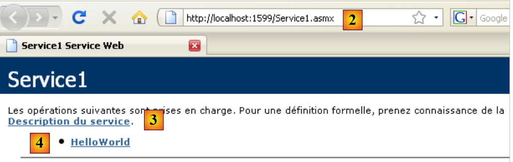
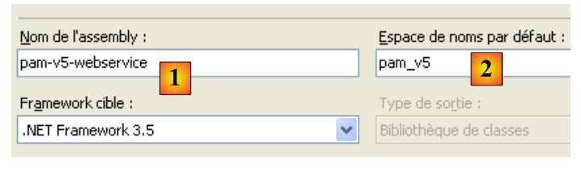
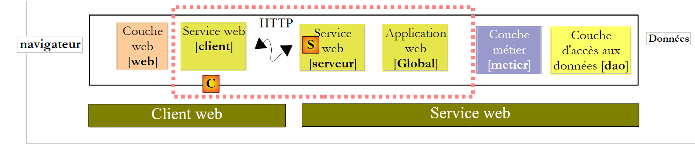
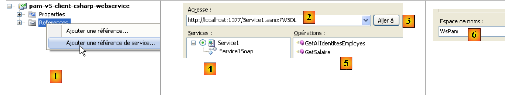
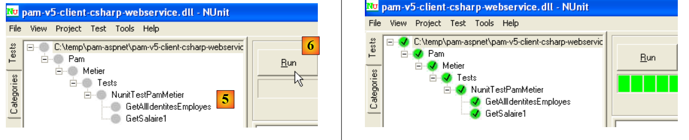

9. A aplicação [SimuPaie] – versão 5 – ASP.NET / serviço web
Leitura recomendada: referência [2], Introdução ao C# 2008, Capítulo 10 «Serviços Web»
9.1. A nova arquitetura da aplicação
A arquitetura em camadas da aplicação Pam é atualmente a seguinte:
 |
Iremos desenvolvê-la da seguinte forma:
 |
Enquanto na arquitetura anterior as camadas [web], [business] e [DAO] eram executadas na mesma máquina virtual .NET, na nova arquitetura a camada [web] será executada numa máquina virtual diferente das camadas [business] e [DAO]. Será este o caso, por exemplo, se a camada [web] estiver na máquina M1 e as camadas [business] e [DAO] estiverem na máquina M2. Aqui temos uma arquitetura cliente/servidor:
- o servidor é composto pelas camadas [negócio] e [DAO]. Por se tratar de um serviço web, requer o servidor web n.º 2 para funcionar.
- O cliente é composto pela camada [web]. Para funcionar, requer o servidor web n.º 1.
- O cliente e o servidor comunicam através da rede TCP/IP utilizando o protocolo HTTP/SOAP. Para tal, devem ser adicionadas duas novas camadas à arquitetura:
- a camada [S], que será um serviço web. O serviço web recebe pedidos de clientes remotos e utiliza as camadas [negócio] e [DAO] para os satisfazer. Existem muitas formas de construir um serviço TCP/IP. A vantagem do serviço web é dupla:
- utiliza o protocolo HTTP, que é permitido através de firewalls corporativos e governamentais
- utiliza um subprotocolo HTTP/SOAP padrão, implementado por muitas plataformas de desenvolvimento: .NET, Java, PHP, Flex, etc. Assim, um serviço web pode ser «consumido» (o termo padrão) por clientes .NET, Java, PHP, Flex, etc.
- Camada [C], que atuará como cliente do serviço web remoto. A sua função será comunicar com o serviço web [S].
- a camada [S], que será um serviço web. O serviço web recebe pedidos de clientes remotos e utiliza as camadas [negócio] e [DAO] para os satisfazer. Existem muitas formas de construir um serviço TCP/IP. A vantagem do serviço web é dupla:
Esta nova arquitetura pode ser derivada das anteriores sem grande esforço:
- as camadas [negócio] e [DAO] permanecem inalteradas
- a camada [web] evolui ligeiramente, principalmente para referenciar entidades como Employee e Payroll, que se tornaram entidades da camada cliente [C]. Estas entidades são análogas às das camadas [business] ou [DAO], mas pertencem a namespaces diferentes.
- a camada de servidor [S] é uma classe que implementa a interface IPamMetier da camada [business]. Esta implementação limita-se a chamar os métodos correspondentes da camada [business]. Os métodos implementados pela camada de servidor [S] serão «expostos» aos clientes remotos, que poderão chamá-los.
- A camada cliente [C] será gerada pelo Visual Studio.
Os princípios da nova arquitetura são os seguintes:
- A camada [web] continua a comunicar com a camada [business] como se esta fosse local. Para o conseguir, a camada cliente [C] implementa a interface IPamMetier da camada [business] real e apresenta-se à camada [web] como uma camada [business] local. Para além da questão do espaço de nomes mencionada anteriormente, a camada [web] permanece inalterada. Esta é a vantagem de trabalhar em camadas. Se tivéssemos construído uma aplicação de camada única, seria necessária uma grande reformulação.
- A camada cliente [C] encaminha de forma transparente os pedidos da camada [web] para o serviço web remoto [S]. Ela lida com todos os aspetos da «comunicação de rede». Recebe uma resposta do serviço web remoto, que formata para devolver à camada [web] no formato que esta espera.
- No lado do servidor, o serviço web [S] recebe comandos dos seus clientes remotos. Formata-os para chamar os métodos da interface IPamMetier na camada [business]. Depois de receber a resposta da camada [business], formata-a para a transmitir pela rede ao cliente [C]. As camadas [business] e [DAO] não precisam de ser modificadas.
9.2. O projeto do Visual Web Developer para o serviço web
Estamos a criar um novo projeto com o Visual Web Developer:
 |
- em [1], selecionamos um projeto Web em C#
- em [2], selecionamos «Aplicação de Serviço Web ASP.NET»
- em [3], nomeamos o projeto web
- em [4], especificamos um local para este projeto
 |
- Em [1], o projeto gerado. Trata-se de um projeto web padrão com os seguintes detalhes:
- Especificámos que o projeto é um «Serviço Web». Um serviço Web não envia páginas Web HTML aos seus clientes, mas sim dados em formato XML. Por conseguinte, a página [Default.aspx] que é normalmente gerada não foi criada.
- Em [2], foi gerado um ficheiro [Service1.asmx] com o seguinte conteúdo:
<%@ WebService Language="C#" CodeBehind="Service1.asmx.cs" Class="pam_v5_webservice.Service1" %>
- (continuação)
- - A tag WebService indica que [Service.asmx] é um serviço web
- - O atributo CodeBehind especifica a localização do código-fonte deste serviço web
- - O atributo Class especifica o nome da classe que implementa o serviço web no código-fonte
O código-fonte [Service.asmx.cs] para o serviço web predefinido é o seguinte:
using System.Web.Services;
namespace pam_v5_webservice
{
/// <summary>
/// Service summary description1
/// </summary>
[WebService(Namespace = "http://tempuri.org/")]
[WebServiceBinding(ConformsTo = WsiProfiles.BasicProfile1_1)]
[System.ComponentModel.ToolboxItem(false)]
// To allow this Web service to be called from a script using ASP.NET AJAX, remove the comment marks from the following line.
// [System.Web.Script.Services.ScriptService]
public class Service1 : System.Web.Services.WebService
{
[WebMethod]
public string HelloWorld()
{
return "Hello World";
}
}
}
- linha 8: a anotação WebService, que faz com que a classe Service1 na linha 13 seja exposta como um serviço web. Um serviço web pertence a um namespace para evitar que dois serviços web no mundo tenham o mesmo nome. Teremos de alterar este namespace mais tarde.
- linha 13: a classe Service1 deriva da classe WebService do .NET Framework.
- linha 16: a anotação WebMethod garante que o método assim anotado será exposto a clientes remotos, que poderão então chamá-lo.
- Linhas 17–20: O método HelloWorld é um método de demonstração. Iremos removê-lo mais tarde. Permite-nos realizar testes iniciais e explorar as ferramentas do Visual Studio, bem como certos conceitos-chave relativos aos serviços web.
 |
- Em [1], executamos o serviço web [Service.asmx]
 |
- O VS Web Developer iniciou o seu servidor web integrado e está a escutar numa porta aleatória, neste caso a 1599. A URL [2] foi então solicitada ao servidor web. Esta é a URL de uma página de teste do serviço web.
- Em [3], encontra-se um link que permite visualizar o ficheiro de descrição do serviço web. Este ficheiro, denominado ficheiro WSDL (Web Service Description Language) devido à sua extensão (.wsdl), é um ficheiro XML que descreve os métodos expostos pelo serviço web. É a partir deste ficheiro WSDL que os clientes podem obter:
- o namespace do serviço web
- a lista de métodos expostos pelo serviço web
- os parâmetros esperados por cada um deles
- a resposta devolvida por cada um deles
- em [4], o único método exposto pelo serviço web .
 |
- em [5], o conteúdo do ficheiro WSDL obtido através do link [3]. Repare na URL [6]. O conhecimento desta URL é necessário para os clientes do serviço web.
 |
- Em [7], a página acedida ao seguir o link [4] permite chamar o método [HelloWorld] do serviço web
- Em [8], o resultado obtido: uma resposta XML. Observe a URL do método [9].
A análise das páginas anteriores ajuda-nos a compreender como um método de serviço web é chamado e que tipo de resposta devolve. Isto permite-nos escrever clientes HTTP capazes de comunicar com o serviço web. A maioria das IDEs modernas permite a geração automática deste cliente HTTP, poupando assim ao programador o trabalho de o ter de escrever. Este é particularmente o caso do Visual Studio Express.
Antes de prosseguirmos com este projeto, iremos alterar o namespace padrão utilizado na geração de classes:
 |
Quando selecionamos as propriedades do projeto (clique com o botão direito do rato no projeto / Propriedades), vemos [1] o nome da assembly do projeto e [2] o seu namespace padrão.
Depois de fazer isso,
- em [Service1.asmx.cs], alteramos o namespace da classe:
using System.Web.Services;
namespace pam_v5
{
...
public class Service1 : System.Web.Services.WebService
{
...
}
}
- Em [Service.asmx], também alteramos o namespace utilizado para a classe [Service1] (clique com o botão direito do rato / Ver código-fonte):
<%@ WebService Language="C#" CodeBehind="Service1.asmx.cs" Class="pam_v5.Service1" %>
Voltemos à arquitetura da nossa aplicação:
 |
- A camada [S] é o serviço web. Ela simplesmente expõe os métodos da camada [business] a clientes remotos. Esta é a camada que estamos a construir atualmente.
- A camada [C] é o cliente HTTP do serviço web. Esta é a camada que os IDEs podem gerar automaticamente.
- A camada [web] trata a camada [C] como uma camada [business] local, desde que garantamos que a camada [C] implemente a interface da camada [business] remota.
Podemos ver abaixo que o nosso serviço web irá:
- expor os métodos da camada [business]
- comunicar-se com a camada [business], que, por sua vez, se comunicará com a camada [DAO].
O projeto deve, portanto, utilizar as DLLs para as camadas [business] e [DAO]. Ele evolui da seguinte forma:
 |
- em [1], adicionamos referências ao projeto
- em [2], selecionamos as DLLs habituais da pasta [lib]. Asseguraremos que a sua propriedade «Copiar para local» está definida como Verdadeiro. As DLLs selecionadas são aquelas que implementam as camadas [business] e [DAO] com suporte para o NHibernate.
Uma aplicação web do tipo «Serviço Web ASP.NET» pode ter uma classe de aplicação global «Global.asax», tal como uma aplicação clássica do tipo «Site Web ASP.NET». Já vimos as vantagens de uma classe deste tipo:
- é instanciada quando a aplicação arranca e permanece na memória
- pode, assim, armazenar dados partilhados por todos os clientes que são de leitura apenas. Na nossa aplicação, irá armazenar, tal como nas anteriores, a lista simplificada de funcionários. Isto evitará ter de recuperar esta lista da base de dados quando um cliente a solicitar.
 |
- Em [1], clique com o botão direito do rato no projeto
- em [2], selecione a opção [Adicionar Novo Item]
- Em [3], selecione [Classe de Aplicação Global]
- Em [4], o ficheiro [Global.asax] foi adicionado ao projeto
O conteúdo do ficheiro [Global.asax] é o seguinte:
<%@ Application Codebehind="Global.asax.cs" Inherits="pam_v5.Global" Language="C#" %>
O conteúdo do ficheiro [Global.asax.cs] é o seguinte:
using System;
namespace pam_v5
{
public class Global : System.Web.HttpApplication
{
protected void Application_Start(object sender, EventArgs e)
{
}
...
}
}
O que devemos fazer no método Application_Start? Exatamente o mesmo que nas aplicações web anteriores. Vamos voltar à arquitetura da aplicação e colocar a classe [Global] lá:
 |
No diagrama acima,
- a classe [Global] é instanciada quando o serviço web é iniciado. Ela permanece na memória enquanto o serviço web estiver ativo.
- A classe [Global] instancia as camadas [business] e [DAO] no seu método [Application_Start]
- Para melhorar o desempenho, a classe [Global] armazena a lista simplificada de funcionários num campo interno. Ela irá recuperar a lista de funcionários a partir deste campo.
- O serviço web é instanciado com cada pedido do cliente. Desaparece após atender a esse pedido. Não se comunicará diretamente com a camada [business], mas sim com a classe [Global]. Esta última implementará a interface da camada [business].
A classe [Global] é semelhante à já criada para aplicações anteriores:
using System;
using Pam.Dao.Entites;
using Pam.Metier.Entites;
using Pam.Metier.Service;
using Spring.Context.Support;
namespace pam_v5
{
public class Global : System.Web.HttpApplication
{
// --- static application data ---
public static Employe[] Employes;
public static IPamMetier PamMetier = null;
protected void Application_Start(object sender, EventArgs e)
{
// instantiation layer [metier]
PamMetier = ContextRegistry.GetContext().GetObject("pammetier") as IPamMetier;
// retrieve the simplified employee table
Employes = PamMetier.GetAllIdentitesEmployes();
}
// simplified list of employees
static public Employe[] GetAllIdentitesEmployes()
{
return Employes;
}
// employee salary
static public FeuilleSalaire GetSalaire(string SS, double heuresTravaillées, int joursTravailles)
{
return PamMetier.GetSalaire(SS, heuresTravaillées, joursTravailles);
}
}
}
A classe [Global] implementa a interface [IPamMetier], mas isso não é explicitamente indicado na declaração:
public class Global : System.Web.HttpApplication, IPamMetier
Na verdade, os métodos GetAllEmployeeIDs (linha 24) e GetSalary (linha 30) são estáticos, ao passo que os métodos da interface IPamMetier não o são. Por conseguinte, a classe Global não pode implementar a interface IPamMetier. Além disso, não é possível declarar os métodos GetAllEmployeeIDs e GetSalary como não estáticos. Isto porque são acedidos através do nome da classe e não através de uma instância da classe.
- Linha 15: O método Application_Start é semelhante ao das classes [Global] estudadas em versões anteriores. Ele instancia a camada [business] (linha 18) e, em seguida, inicializa (linha 20) a matriz de funcionários da linha 12.
- Linha 24: O método GetAllEmployeeIDs simplesmente devolve a matriz de funcionários da linha 12. Esta é a vantagem de a ter armazenado no início da aplicação.
- Linha 30: O método GetSalaire chama o método com o mesmo nome na camada [business].
Para instanciar a camada [business] (linha 18), a classe [Global] utiliza o framework Spring. Isto é configurado pelo ficheiro [Web.config], que é idêntico ao do projeto anterior: configura o Spring e o NHibernate para instanciar as camadas [business] e [DAO] do serviço web.
Voltemos à arquitetura da nossa aplicação cliente/servidor:
 |
No lado do servidor, tudo o que resta é escrever o próprio serviço web [S]. Se voltarmos à arquitetura da aplicação:
 |
vemos que, no lado do servidor, todas as camadas que precedem a camada [business] implementam a sua interface, IPamMetier. Isto não é obrigatório, mas é uma abordagem lógica. Este raciocínio pode ser aplicado no lado do cliente, ao cliente [C] do serviço web [S]. Assim, todas as camadas que separam a camada [web] da camada [business] implementam a interface IPamMetier. Podemos, portanto, dizer que voltámos a uma aplicação de três camadas:
- a camada de apresentação [web] [1]
- a camada [de negócios] [2]
- a camada de acesso aos dados [3]
A implementação do serviço web [Service1.asmx.cs] poderia ser a seguinte:
using System.Web.Services;
using Pam.Dao.Entites;
using Pam.Metier.Entites;
using Pam.Metier.Service;
namespace pam_v5
{
[WebService(Namespace = "http://st.istia.univ-angers.fr/")]
[WebServiceBinding(ConformsTo = WsiProfiles.BasicProfile1_1)]
[System.ComponentModel.ToolboxItem(false)]
public class Service1 : System.Web.Services.WebService, IPamMetier
{
// list of all employee identities
[WebMethod]
public Employe[] GetAllIdentitesEmployes()
{
return Global.GetAllIdentitesEmployes();
}
// ------- salary calculation
[WebMethod]
public FeuilleSalaire GetSalaire(string ss, double heuresTravaillees, int joursTravailles)
{
return Global.GetSalaire(ss, heuresTravaillees, joursTravailles);
}
}
}
- linha 8: a classe é anotada com o atributo [WebService] e atribuímos um nome ao espaço de nomes do serviço web
- linha 11: a classe [Service1] herda da classe [WebService] e implementa a interface [IPamMetier]
- linhas 15 e 22: cada método da classe é anotado com o atributo [WebMethod] para ser exposto a clientes remotos. Por predefinição, todos os métodos públicos de um serviço web são expostos. Os atributos nas linhas 15 e 22 são, portanto, opcionais aqui. Para implementar a interface [IPamMetier], cada método simplesmente chama o método com o mesmo nome na classe [Global].
Estamos prontos para executar o serviço web:
 |
- em [1], o projeto é regenerado
- em [2], selecionamos o serviço web [Service1.asmx] e exibimo-lo no navegador [3]
- em [4], a página web apresentada. Mostra os métodos do serviço web.
 |
- em [4], seguimos o link [GetAllIdentitesEmployes] e em [5] obtemos a página de teste para este método.
- em [6], o URL do método
- Em [7], o botão [Call] utilizado para testar o método. Este método não requer quaisquer parâmetros.
- Em [8], o resultado XML devolvido pelo serviço web. Neste resultado, apenas as propriedades SS, LastName e FirstName dos objetos Employee são significativas, porque o método [GetAllEmployeeIDs] solicita apenas estas propriedades. No entanto, este método devolve uma matriz de objetos Employee. Podemos ver em [8] que as propriedades numéricas Id e Version estão incluídas no fluxo XML devolvido, mas não as propriedades com valor nulo: Address, City, ZipCode, Allowances.
Temos um serviço web ativo. Vamos agora escrever um cliente C# para ele. Para tal, precisaremos da URI do ficheiro WSDL do serviço web. Obtemo-la a partir da página inicialmente apresentada ao executar [Service.asmx]:
 |
- em [1], o URI do serviço web
- em [2], o link para o seu ficheiro WSDL
- em [3], o valor deste link
9.3. O projeto C# para um cliente NUnit do serviço web
Criamos um projeto C# (usando o Visual C#, não o Visual Web Developer) para o cliente do serviço web. Este será um cliente de teste NUnit. Portanto, o projeto será do tipo «Biblioteca de Classes».
 |
- em [1], criamos um projeto C# do tipo «Biblioteca de Classes»
- em [2], nomeamos o projeto
- Em [3], o projeto. Eliminamos [Class1.cs].
- Em [4], o novo projeto.
 |
- Nas propriedades do projeto, no separador [Aplicação] [5], definimos o namespace do projeto. Todas as classes geradas pelo IDE estarão neste namespace.
Guardamos o nosso novo projeto num local à nossa escolha:
Depois de fazer isto, geramos o cliente do serviço web remoto. Para compreender o que estamos prestes a fazer, precisamos de rever a arquitetura cliente/servidor atualmente em desenvolvimento:
 |
O IDE irá gerar a camada cliente [C] a partir do URI do ficheiro WSDL do serviço web [S]. Recorde-se que o URI deste ficheiro foi anotado anteriormente. Procedemos a partir do web a seguinte forma:
 |
- Em [1], clique com o botão direito do rato no ramo Referências e adicione uma referência de serviço
- Em [2], introduza o URL do ficheiro WSDL do serviço web anotado anteriormente. O serviço deve estar em execução, caso ainda não esteja.
- Em [3], solicite a descoberta do serviço web através do seu ficheiro WSDL
- Em [4], o serviço web descoberto
- Em [5], os métodos expostos pelo serviço web.
- Em [6], o namespace no qual pretende colocar as classes e interfaces do cliente que serão geradas.
- Confirme o assistente
 |
- Em [1], o ficheiro do cliente gerado ( ). Clique duas vezes nele para visualizar o seu conteúdo.
- em [2], no Object Explorer, são apresentadas as classes e interfaces do namespace Client.WsPam. Este é o namespace do cliente gerado.
- Em [3], a classe que implementa o cliente do serviço web.
- Em [4], os métodos implementados pelo cliente [Service1SoapClient]. Aqui encontrará os dois métodos do serviço web remoto [5] e [6].
- Em [2], pode ver os diagramas de entidade para as camadas:
- [negócio]: Folha de Pagamento, Itens da Folha de Pagamento
- [DAO]: Employee, Contributions, Allowances
À medida que avançamos, tenha em mente que estas representações das entidades remotas estão localizadas no lado do cliente e no namespace PamV5Client.WsPam.
Vamos examinar os métodos e propriedades expostos por uma delas:
 |
- Em [1], selecionamos a classe local [Employee]
- Em [2], vemos as propriedades da entidade remota [Employee], bem como os campos privados utilizados para as necessidades específicas da entidade local.
Voltemos à nossa aplicação C#. Adicionamos-lhe uma classe de teste NUnit:
 |
- em [1], a classe [NUnit] adicionada. A classe [NUnit] requer a estrutura NUnit e, por isso, uma referência à sua DLL. Partimos do princípio de que a estrutura NUnit já está instalada no computador (http://nunit.org/).
- Em [2], adicionamos uma referência ao projeto
- no separador [3] .NET, que lista as DLLs registadas no computador, selecionamos [4], a DLL [nunit.framework], versão 2.4.6 ou posterior.
Além disso, utilizaremos o Spring para instanciar o cliente local [C] do serviço web [S]:
 |
A referência à DLL do Spring pode ser adicionada da mesma forma que para a estrutura NUnit, caso as DLLs já tenham sido registadas no computador (http://www.springframework.net/download.html).
Procedemos de forma diferente. Utilizamos a pasta [lib] de projetos anteriores, que continha as DLLs necessárias ao Spring, e adicionamos a referência ao Spring ao projeto:
 |
Vamos rever a arquitetura do cliente atualmente em desenvolvimento:
 |
Acima, vemos que o cliente de teste [1] interage com uma camada [de negócios] estendida [2]. Esta camada possui os mesmos métodos que a camada [de negócios] remota. Podemos, portanto, utilizar a classe de teste já encontrada ao testar a camada [de negócios] no projeto C# [pam-metier-dao-nhibernate]:
using NUnit.Framework;
using Pam.Dao.Entites;
using Pam.Metier.Entites;
using Pam.Metier.Service;
using Spring.Context.Support;
namespace Pam.Metier.Tests {
[TestFixture()]
public class NunitTestPamMetier : AssertionHelper {
// the [metier] layer to test
private IPamMetier pamMetier;
// manufacturer
public NunitTestPamMetier() {
// layer instantiation [dao]
pamMetier = ContextRegistry.GetContext().GetObject("pammetier") as IPamMetier;
}
[Test]
public void GetAllIdentitesEmployes() {
// audit no. of employees
Expect(2, EqualTo(pamMetier.GetAllIdentitesEmployes().Length));
}
[Test]
public void GetSalaire1() {
// wage sheet calculation
FeuilleSalaire feuilleSalaire = pamMetier.GetSalaire("254104940426058", 150, 20);
// checks
Expect(368.77, EqualTo(feuilleSalaire.ElementsSalaire.SalaireNet).Within(1E-06));
// non-existent employee payslip
bool erreur = false;
try {
feuilleSalaire = pamMetier.GetSalaire("xx", 150, 20);
} catch (PamException) {
erreur = true;
}
Expect(erreur, True);
}
}
}
Há algumas alterações a fazer:
- Na linha 18, instanciamos a camada [business] utilizando o framework Spring. A classe não é a mesma em ambos os casos. Aqui, a camada [business] local é uma instância da classe [PamV5Client.WsPam.Service1SoapClient], a classe gerada pelo IDE. Por conseguinte, o Spring é configurado da seguinte forma no ficheiro [app.config] do projeto C#:
<?xml version="1.0" encoding="utf-8" ?>
<configuration>
<configSections>
<sectionGroup name="spring">
<section name="context" type="Spring.Context.Support.ContextHandler, Spring.Core" />
<section name="objects" type="Spring.Context.Support.DefaultSectionHandler, Spring.Core" />
</sectionGroup>
</configSections>
<spring>
<context>
<resource uri="config://spring/objects" />
</context>
<objects xmlns="http://www.springframework.net">
<object id="pammetier" type="PamV5Client.WsPam.Service1SoapClient, pam-v5-client-csharp-webservice"/>
</objects>
</spring>
<system.serviceModel>
...
- na linha 16 acima, o objeto [pammetier] é uma instância da classe [PamV5Client.WsPam.Service1SoapClient] localizada no assembly [pam-v5-client-csharp-webservice]. Para encontrar a primeira informação, basta voltar à definição da classe [Service1SoapClient] no Object Explorer (Secção 9.3):
 |
- em [2], a classe de implementação da camada [business] local, e em [1] o seu namespace
- em [3], nas propriedades do projeto, o nome do assembly, a segunda informação necessária para configurar o objeto Spring [pammetier].
Voltemos ao código para instanciar a camada [de negócios] local em [NUnit.cs]:
// the [metier] layer to test
private IPamMetier pamMetier;
// manufacturer
public NunitTestPamMetier() {
// layer instantiation [dao]
pamMetier = ContextRegistry.GetContext().GetObject("pammetier") as IPamMetier;
}
Linha 7: A camada [business] remota era do tipo IPamMetier. Aqui, a camada [business] é do tipo [Service1SoapClient]:
public class Service1SoapClient : System.ServiceModel.ClientBase<Service1Soap>
Vemos que a classe Service1SoapClient não implementa a interface IPamMetier, apesar de expor métodos com os mesmos nomes. Devemos, portanto, escrever a instanciação da camada [de negócios] local da seguinte forma:
// the [metier] layer to test
private Service1SoapClient pamMetier;
// manufacturer
public NunitTestPamMetier() {
// instantiation layer [metier]
pamMetier = ContextRegistry.GetContext().GetObject("pammetier") as Service1SoapClient;
}
Outra alteração a fazer:
[Test]
public void GetSalaire1() {
...
try {
feuilleSalaire = pamMetier.GetSalaire("xx", 150, 20);
} catch (PamException) {
erreur = true;
}
Expect(erreur, True);
}
O código acima utiliza, na linha 6, o tipo PamException, que não existe no lado do cliente. Vamos substituí-lo pela sua classe pai, o tipo Exception.
[Test]
public void GetSalaire1() {
...
try {
feuilleSalaire = pamMetier.GetSalaire("xx", 150, 20);
} catch (Exception) {
erreur = true;
}
Expect(erreur, True);
}
Por fim, os namespaces importados já não são os mesmos:
using System;
using PamV5Client.WsPam;
using NUnit.Framework;
using Spring.Context.Support;
Depois de concluir este passo, o projeto «Class Library» pode ser compilado. É criada a seguinte DLL:
 |
- em [1], a pasta [bin/Release] do projeto C#
- em [2], a DLL do projeto.
O teste NUnit é então executado pela estrutura NUnit (a base de dados MySQL dbpam_nhibernate deve estar ativa para o teste):
- em [3] e [4], a DLL [2] é carregada na aplicação de teste NUnit
 |
- em [5], a classe de teste é selecionada e executada [6]
- em [7], os resultados de um teste bem-sucedido
Agora temos um serviço web funcional.